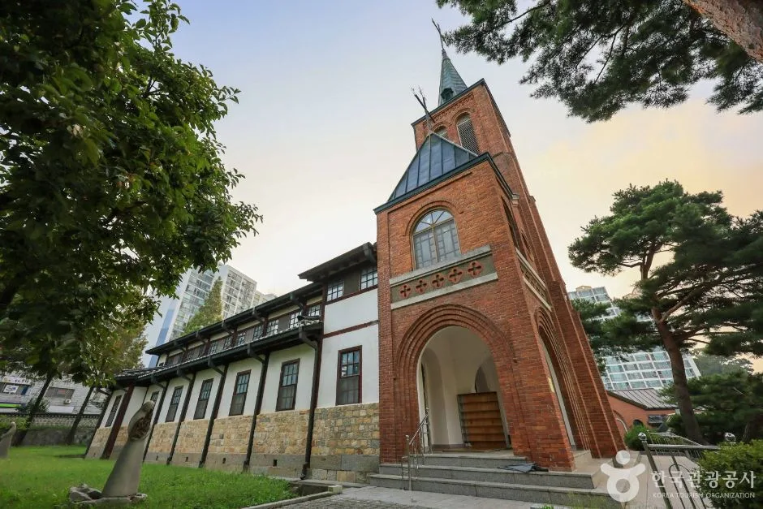
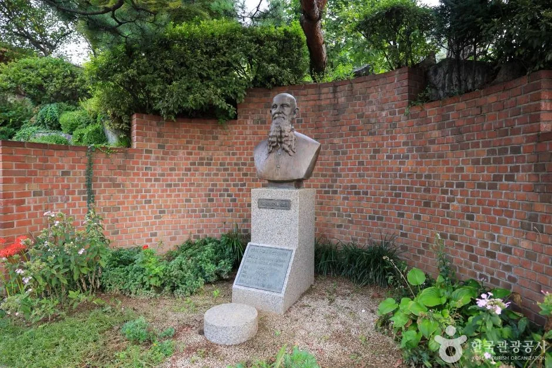
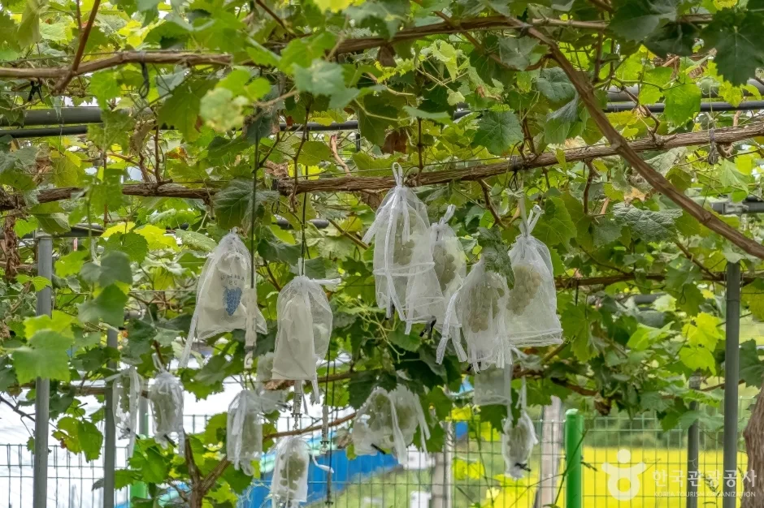
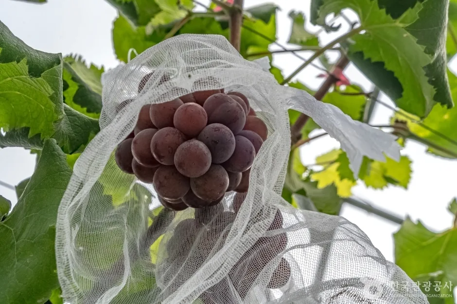
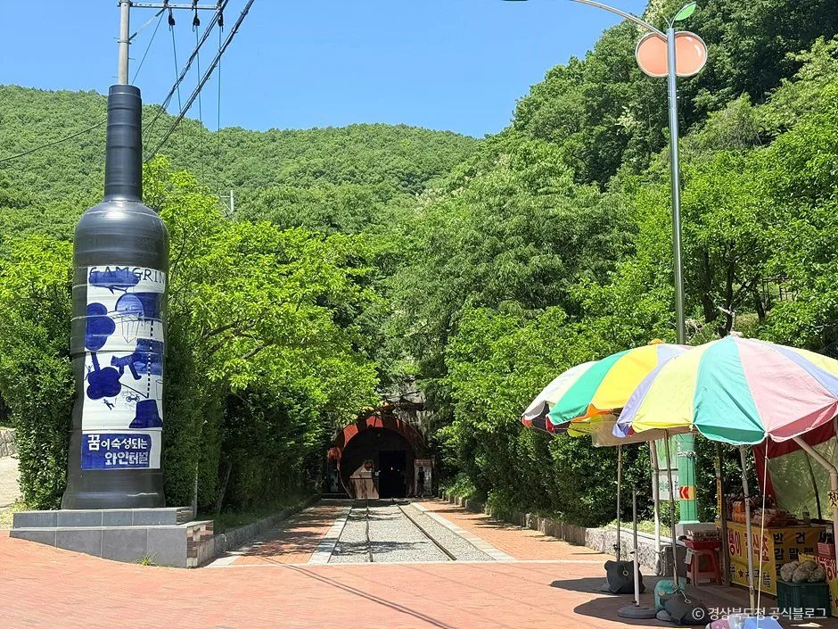
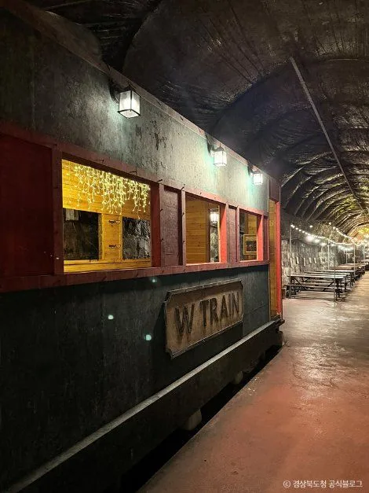
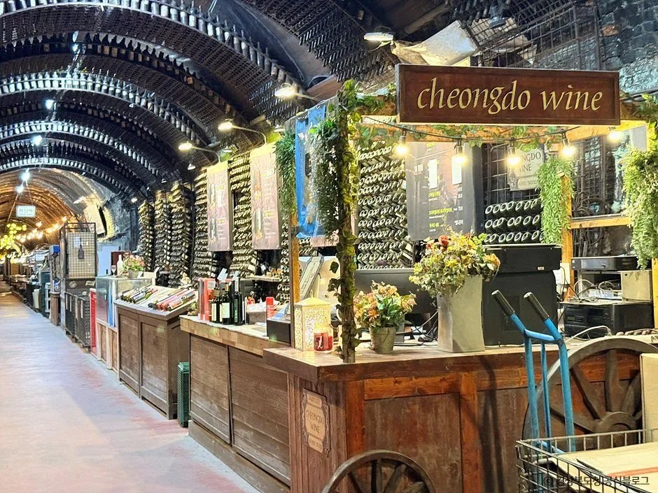

▲ 청도 와인터널 내부. 1904년 완공된 옛 경부선 기차터널을 개조해 청도 특산 감(반시)으로 만든 '감와인'을 숙성시키는 공간으로 쓰고 있다 사진=한국관광공사
1. 왜 안성과 청도인가 — 영동·영천과는 다른 이야기
국내 와인 여행지 하면 대개 충북 영동과 경북 영천이 먼저 떠오른다. 두 지역 모두 실제 포도 산지를 낀 와이너리 투어로 잘 알려져 있다. 하지만 한국 와인의 역사를 거슬러 올라가면 전혀 다른 두 지역이 등장한다. 경기 안성은 국내에 포도나무가 처음 심어진 곳이고, 경북 청도는 포도가 아닌 감으로 '세계 최초' 와인을 만들어낸 곳이다. 두 곳 모두 영동·영천의 포도밭·와인터널 투어와는 겹치지 않는 완전히 다른 동선과 소재를 가진 가을 드라이브 코스다.

▲ 경기도 기념물 제82호로 지정된 안성성당. 프랑스인 앙투안 공베르(공안국) 신부가 1900년에 지었으며, 그가 미사주를 만들기 위해 들여온 포도나무가 국내 포도 재배의 효시로 꼽힌다 사진=한국관광공사
2. 코스 A — 안성, 신부님이 심은 포도나무에서 시작된 이야기
국내 포도 재배의 시작점은 뜻밖에도 성당 앞뜰이었다. 파리외방전교회 소속 프랑스인 신부 앙투안 공베르(한국명 공안국·孔安國, 1875~1950)는 1900년 안성본당 주임으로 부임해 미사에 쓸 포도주를 직접 만들기 위해 텃밭에 포도나무를 심었다. 포도나무가 안성의 토질·기후에서 잘 자라는 것을 본 그는 가난한 지역민의 자립 수단으로 포도 농사를 넓히기로 하고, 안성에 맞는 품종을 찾기 위해 무려 32차례나 프랑스를 오가며 묘목과 재배법을 들여왔다. 이렇게 안성에 뿌리내린 포도나무가 지역 농가로 퍼지면서 지금의 '안성 포도' 산지가 형성됐고, 이 일이 국내 포도 재배의 효시로 기록된다. 공베르 신부는 이후에도 안성 등지에서 반세기 가까이 사목·지역사회 활동을 이어가다 한국전쟁이 터지자 북한군에 체포돼 납북됐고, 혹한 속에 강제 이송된 끝에 1950년 11월 12일 평안북도 중강진에서 눈을 감았다.
이 역사를 눈으로 확인할 수 있는 곳이 안성시 구포동에 있는 안성성당이다. 붉은 벽돌로 지은 고딕 양식 종탑이 인상적인 이 성당은 지금도 실제 성당으로 쓰이고 있어 방문 시 미사 시간을 피해 조용히 둘러보는 것이 예의다. 성당에서 자동차로 30분 남짓 떨어진 서운면에는 한때 국내 최초의 포도 전문 박물관인 '샤토안 포도박물관'이 있었다. 2010년 개관해 전시실과 와인 시음장, 판매장, 레스토랑을 갖추고 포도와인 족욕·포도비누 만들기 등 체험 프로그램을 운영했지만, 2018년 무렵 위탁 운영자와 안성시 간 명도소송이 불거지며 운영이 중단됐고 이후 장기간 방치되다 2023년 건물이 철거됐다. 안성시는 이 부지에 '포도역사테마공원'을 조성할 계획을 밝혔지만 2026년 현재까지 착공 전 단계로, 방문객이 직접 체험할 수 있는 시설은 아직 남아 있지 않다. 따라서 지금 이 코스를 계획한다면 안성성당 답사에, 매년 9월 중순 서운면 일대에서 열리는 '안성맞춤포도축제' 기간의 포도 체험·직거래 장터를 더하는 편이 현실적이다.

▲ 안성성당 경내 붉은 벽돌 담 앞에 세워진 흉상. 성당은 지금도 실제 미사가 열리는 곳이라 조용히 둘러보는 것이 좋다 사진=한국관광공사

▲ 포도송이마다 봉지를 씌운 안성 서운면의 포도농원. 병해충과 조류 피해를 막기 위해 여름철 봉지를 씌우고, 수확기가 다가오면 벗겨 당도를 채운다 사진=한국관광공사

▲ 봉지 속에서 익어가는 안성 서운면 농원의 포도송이 사진=한국관광공사
📍 코스 A 참고 정보
안성성당: 경기도 안성시 구포동 80-1, 경기도 기념물 제82호(1985년 6월 28일 지정), 실제 미사가 진행 중인 성당이므로 예배 시간 확인 후 방문 권장
샤토안 포도박물관(옛): 경기도 안성시 서운면 소재, 2010년 개관했으나 2018년 무렵 운영이 중단되고 2023년 건물이 철거돼 현재는 방문객 체험시설이 없음(부지는 포도역사테마공원 조성 예정, 2026년 현재 미착공)
안성맞춤포도축제: 매년 9월 중순~하순 서운면 일원에서 개최(2026년은 9월 18~20일 진행, 연 1회, 제19회)
3. 코스 B — 청도, 122년 된 기차터널이 품은 '세계 최초' 감와인
청도 와인터널은 포도가 아니라 감으로 만든 와인을 보관하는 곳이다. 이 터널은 1904년(메이지 37년) 경부선 철도 터널로 완공돼 이듬해 경부선 개통과 함께 기차가 다니기 시작했다. 붉은 벽돌을 세 겹으로 쌓아 올린 아치형 구조로, 러일전쟁(1904~1905) 승리 후 전리품으로 들여온 벽돌을 사용했다는 이야기가 전해질 만큼 오래된 근대 건축물이다. 1937년 남성현 구간에 새 상행선이 놓이며 기존 선로가 이설돼 기차가 더는 다니지 않게 됐고, 이후 오랫동안 방치돼 있었다.

▲ 와인병 모양 조형물이 서 있는 청도 와인터널 입구 일대. 옛 철길 너머로 터널 입구가 보인다 사진=한국관광공사
이 폐터널에 새 쓰임이 생긴 것은 지역 기업 청도감와인(주)이 청도 특산품인 씨 없는 감 '반시'로 와인을 개발하면서다. 감즙은 발효 단계에서 쉽게 식초로 변해버리는 특성 탓에 와인화가 까다로운데, 2003년부터 시작한 연구 끝에 숙성을 특정 단계에서 멈추는 기술을 확보해 세계 최초로 감을 원료로 한 와인 '감그린'을 완성했다. 이 감와인은 2005년 부산 APEC 정상회의 만찬주로, 2008년과 2013년에는 대통령 취임식 만찬주로 잇따라 선정되며 이름을 알렸다. 터널 내부가 사계절 15~16℃, 습도 60~70%를 유지해 와인 숙성에 최적의 환경이라는 점에 착안해 2006년 3월 길이 1,015m·폭 4.5m·높이 5.3m 규모의 폐터널을 숙성고 겸 관광지로 개장했다. 지금은 레귤러·스페셜·아트·아이스 네 가지 등급의 감그린과 감식초, 감와인 화장품까지 파생 상품을 판매하며, 연간 100만 명 안팎이 찾는 청도의 대표 관광지로 자리 잡았다.

▲ 터널 안에 놓인 열차 객차 모양 전시물. 기차가 다니던 옛 경부선 터널의 역사를 떠올리게 한다 사진=한국관광공사

▲ 터널 안에 마련된 감와인 판매 공간. 감와인과 감식초 등 관련 상품을 구경하고 살 수 있다 사진=한국관광공사
📍 코스 B 참고 정보
청도 와인터널: 경북 청도군 화양읍 송금길 100, 문의 054-371-1904
운영시간: 대략 평일 09:30~19:00, 주말 09:30~20:00 안팎(연중무휴)이나 출처마다 마감·퇴장 시각이 다르게 안내돼 있어 방문 전 전화 확인이 필수
입장료: 코로나19 이후 한시적 무료 개방 중(원래는 유료였던 만큼 향후 유료 전환 가능성 있음, 방문 전 확인 권장)
수도권 기준 경부고속도로·중앙고속도로 경유 약 3시간 안팎, 인근에 청도프로방스·청도읍성 등 연계 관광지 다수
4. 두 코스 한눈에 비교하기
안성과 청도는 방향이 완전히 달라 하루에 잇기는 어렵다. 수도권에서는 안성 코스가, 영남권에서는 청도 코스가 각각 당일 코스로 더 현실적이다.
| 구분 | 코스 A — 안성 | 코스 B — 청도 |
|---|---|---|
| 핵심 소재 | 국내 포도 재배의 시작(1900년, 공베르 신부) | 세계 최초 감와인 '감그린'(2006년 개장) |
| 주요 경유지 | 안성성당 → (구)포도박물관 부지 | 청도 와인터널(옛 경부선 폐터널) |
| 체험 포인트 | 안성맞춤포도축제 기간 포도 체험·직거래(9월) | 감와인·감식초 시음, 터널 카페 |
| 입장료 | 안성성당 무료, 포도축제 프로그램별 상이 | 한시적 무료(변동 가능) |
| 추천 일정 | 반나절~1일 | 반나절 |
| 수도권 접근성 | 약 1시간 안팎 | 약 3시간 안팎 |
5. 방문 전 확인해두면 좋은 것들
두 곳 모두 성수기·비수기 운영시간이 조금씩 달라질 수 있어 출발 전 전화 확인이 안전하다. 안성성당은 실제 신자들이 미사를 보는 종교 시설이라는 점을 감안해 예배 시간을 피해 조용히 둘러보는 것이 기본 예의다. 한때 안성 코스의 체험 거점이었던 샤토안 포도박물관은 2023년 철거돼 더는 방문할 수 없으므로, 포도 체험을 원한다면 매년 9월 열리는 안성맞춤포도축제 일정에 맞춰 방문 계획을 잡아야 한다. 청도 와인터널은 연중무휴로 운영돼 접근성이 높지만, 입장료가 한시적 무료 조치인 만큼 유료 전환 여부와 운영시간을 방문 전 전화로 확인하는 편이 안전하다. 터널 특성상 냉기가 있어 가을철에도 얇은 겉옷을 챙기는 것을 권한다.
✅ 안성·청도 와인 드라이브, 이것만은 확인하세요
· 안성 포도 재배의 시작은 1900년 공베르 신부가 안성성당 앞뜰에 심은 포도나무
· 한때 안성 코스의 체험 거점이던 샤토안 포도박물관은 2023년 철거돼 현재는 방문 불가(안성맞춤포도축제로 대체 추천)
· 청도 와인터널은 1904년 완공된 경부선 폐터널을 2006년 감와인 숙성고로 재활용한 곳
· 청도 와인터널은 연중무휴, 입장료는 한시적 무료(운영시간·요금은 방문 전 전화 확인 필수)
· 안성 코스와 청도 코스는 방향이 달라 하루에 잇기보다 지역별 당일 코스로 추천
· 두 코스 모두 영동 와인터널·영천 와이너리 투어와는 겹치지 않는 별도 동선
6. 정리
국내 와인 여행지로 영동과 영천만 떠올렸다면, 안성과 청도는 전혀 다른 이야기를 들려준다. 안성은 1900년 프랑스인 신부가 성당 앞뜰에 심은 포도나무에서 국내 포도 재배가 시작된 곳이고, 청도는 122년 된 폐터널을 감와인 숙성고로 되살려 세계 최초의 감와인을 만든 곳이다. 두 코스는 방향이 서로 달라 하루에 잇기는 어렵지만, 각각 수도권과 영남권에서 당일치기로 다녀올 수 있는 가을 와인 드라이브 코스로 손색이 없다.